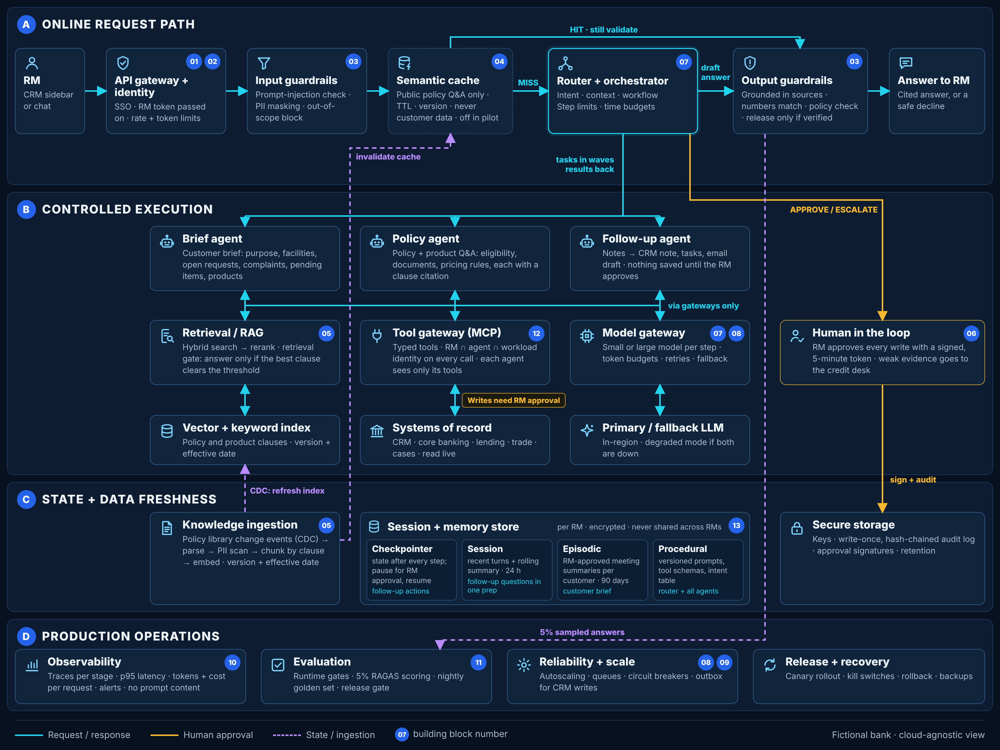

SME RM Copilot · Architecture review
Objective: help RMs improve productivity, engage customers better, and spend less time on information retrieval, customer preparation and follow-up actions.
Fictional bank; all figures illustrative. Working draft: sections are added as they are agreed.
SME RM Copilot · Section 1
| Problem | Impact |
|---|---|
| Customer data is spread across CRM, core banking, lending, trade and case systems | Slow, incomplete meeting prep |
| Past conversations, open requests and follow-ups are tracked manually | Missed commitments, delays, gaps in CRM records |
| Policy and product rules sit in long documents | Slow answers, inconsistent advice |
| Cross-sell depends on what each RM happens to remember | Missed revenue, generic pitches |
| Use case | What it does | Problems solved |
|---|---|---|
| Customer brief | Purpose of the meeting, open requests, products and facilities, complaints, pending items from both sides, suggested products, talking points | Scattered data, manual tracking, cross-sell |
| Policy and product Q&A | Answers eligibility, document and policy questions with cited clauses; declines when unsure | Policy in long documents |
| Follow-up actions | Turns the RM's notes into a CRM note, tasks and an email draft; the RM approves before anything is saved | Manual tracking |
| Area | Benefit |
|---|---|
| Productivity | Less time gathering data, preparing for meetings and writing follow-ups |
| Customer engagement | Better-prepared meetings, faster responses, fewer missed commitments |
| Revenue | More relevant cross-sell from data-driven product suggestions |
| Consistency and risk | Policy-backed answers, an RM approval on every write, full audit trail |
Each benefit is measured in the pilot against a baseline taken before launch.
SME RM Copilot · Section 2.1 · High-level architecture

SME RM Copilot · Section 2.1
| Component | One line |
|---|---|
| A · Online request path | |
| API gateway + identity | Verifies the RM's sign-in and applies rate and token limits |
| Input guardrails | Blocks prompt injection and masks personal data before any model call |
| Semantic cache | Reuses verified answers to public policy questions; invalidated when a policy changes (CDC); off in the pilot |
| Router + orchestrator | Works out the intent and runs the workflow within step limits and time budgets |
| Output guardrails | Releases an answer only when it is grounded, cited and correct |
| B · Controlled execution | |
| Brief, policy and follow-up agents | One agent per use case, each with only its own tools |
| Retrieval / RAG | Finds the relevant policy clauses; no answer without strong evidence |
| Tool gateway (MCP) | The only path to the Bank's systems; at runtime every call checks OIDC (the RM's identity) + RBAC (role and customer entitlement) + the agent's identity + the workload identity |
| Model gateway | Picks the right model for each step, with budgets and fallback |
| Human in the loop | The RM approves every write; unclear cases go to the credit desk |
| C · State + data freshness | |
| Knowledge ingestion (CDC) | Change data capture (CDC) events from the policy library re-embed changed clauses, refresh the index and invalidate the cache |
| Session + memory store | Checkpointer, session, episodic and procedural memory, per RM |
| Secure storage | Keys and a write-once audit log |
| D · Production operations | |
| Observability | LLM tracing with Langfuse: per-step latency, tokens and cost per request, prompt versions, alerts |
| Evaluation | RAGAS scoring (faithfulness, answer relevancy, context precision) on sampled live answers, runtime gates, golden-set check before every release |
| Reliability + scale | Autoscaling, queues and circuit breakers |
| Release + recovery | Canary rollout, kill switches and rollback |
SME RM Copilot · Section 2.2
Every source sits behind an MCP server. Every call passes the MCP tool gateway: OIDC + RBAC + agent identity + workload identity.
| Source | Data | Integration |
|---|---|---|
| CRM | Profile, conversations, open requests, tasks | MCP → REST API (read) / outbox (write after approval) |
| Core banking | Accounts, balances, turnover | MCP → REST API / ODS view (SQL) / text-to-SQL (later, governed) |
| Lending | Loans, limits, repayments, applications | MCP → REST API / ODS view (SQL) |
| Trade finance | LCs, guarantees, amendments | MCP → REST / SOAP facade / events |
| Case management | Complaints, service requests, status | MCP → REST API / webhook |
| Policy knowledge store | Credit policy, product terms, fees, checklists, approvals, KYC/AML | MCP → hybrid index (vector / keyword) ← CDC events |
| Product rules | Signal-to-product rules | MCP → REST API / config store |
| Memory store | Checkpoints, session, meeting summaries, prompts | MCP → memory store (per RM, encrypted) |
| Calendar (Phase 2) | Upcoming meetings, draft invites | MCP → REST API / webhook |
MCP servers: customer-data (brief, follow-up) · policy-search (policy) · crm-drafts (follow-up) · memory and product-rules (brief)
SME RM Copilot · Section 2.3
| # | Component | Inside it | Model / technology |
|---|---|---|---|
| 1 | Input guardrails | Prompt-injection detection · PII masking · out-of-scope block | Injection classifier · PII entity recogniser · safety classifier |
| 2 | Semantic cache | Public policy Q&A only · TTL · invalidated by CDC | Embedding model + similarity search |
| 3 | Router + orchestrator | Fast path: a specific ask goes straight to one agent · Planner path: plans the steps, calls the agents and runs the agent loop until done · step limits · time budgets | Intent classifier (fast path) · primary LLM planner (plan-and-execute) |
| 4 | Multi-agent layer | Brief, policy and follow-up agents · agents talk only through the orchestrator | Primary or mini LLM per step |
| 5 | Tool gateway (MCP) | MCP servers and typed tools · OIDC + RBAC + agent + workload identity | MCP protocol |
| 6 | Model gateway | Model routing per step · token budgets · retries · fallback | Primary LLM · mini LLM · fallback LLM |
| 7 | Retrieval (vector DB) | Hybrid vector + keyword index · reranker · retrieval gate | Embedding model · reranker model |
| 8 | Ingestion pipeline | CDC trigger · parse · PII scan · chunk by clause · embed | Embedding model · PII recogniser |
| 9 | Memory store | Checkpointer · session · episodic · procedural | Document store, per RM, encrypted |
| 10 | Output guardrails | Grounding · number match · policy check · PII unmask for the RM | Judge model (faithfulness, relevancy) |
| 11 | Human in the loop | RM approval (signed token) · escalation to the credit desk | Workflow, no model |
| 12 | Evaluation | Runtime gates · RAGAS on sampled answers · golden set · release gate | RAGAS · judge model |
| 13 | Observability | Traces · p95 per step · tokens and cost · alerts | Langfuse |
| Ask | Path |
|---|---|
| Specific, single step: "Prepare brief" button, "Draft follow-up" | Fast path: intent classifier → one agent |
| Multi-step or open: "Brief me on Gulf Star; can we go to 3.5m unsecured? If not, what collateral?" | Planner path: LLM plans → agents in a loop |
| Model | Used for | Model | Used for |
|---|---|---|---|
| Primary LLM | Planning; briefs and complex answers | Embedding model | Clauses, questions, cache keys |
| Mini LLM | Extraction, simple answers, summaries | Reranker model | Puts the best clause first |
| Intent classifier | Fast-path routing of simple, specific asks | Judge model | RAGAS faithfulness and relevancy |
| Fallback LLM | Takes over if the primary fails | Guardrail models | Prompt injection, PII, content safety |
Principles: fast path for simple asks, planner within step limits and time budgets · RAG, not fine-tuning; no customer data used for training · pinned versions, all in-region.
SME RM Copilot · Section 2.4
The AI patterns implemented in the copilot. Controls such as guardrails and offline evaluation are covered in security (2.5) and the technical deep dive (4.3).
| Step | Design |
|---|---|
| Chunking | One chunk per clause; tables, limits and amounts kept whole |
| Metadata | Document, clause number, version, effective date, product, segment, clearance |
| Hybrid search | BM25 keyword for exact numbers, clause numbers and product codes + vector for meaning, then rerank |
| Metadata filter | Only current, effective and cleared clauses |
| Retrieval gate | No strong enough clause means a decline, not a guess |
| Grounded answer | Every claim cites its clause and passes the faithfulness check |
| Pattern | How we use it |
|---|---|
| Routing (fast path) | A specific ask goes straight to one agent |
| Plan-and-execute | The LLM plans the steps and calls the agents in order, within step limits and time budgets |
| Orchestrator-workers | Hub and spoke; agents never talk to each other |
| Tool use (MCP, bounded loop) | Each agent calls typed tools up to a fixed step limit |
| Human in the loop | Checkpoint → pause for RM approval → resume |
| Stateful memory | Checkpointer, session and episodic memory |
| Pattern | How we use it |
|---|---|
| Model routing (cascade) | Smallest model that can do the step; fallback on failure |
| Structured generation (Pydantic) | Structured prompts; plans and extractions validated against schemas |
| Evaluator-optimizer | Judge checks faithfulness; one stricter retry, else decline |
| Semantic caching | Public policy Q&A only; invalidated by CDC |
SME RM Copilot · Section 2.5
| Layer | Control | Azure implementation |
|---|---|---|
| User identity | SSO with OIDC; the RM's token is passed on to every call | Microsoft Entra ID (OIDC), On-Behalf-Of token flow |
| RBAC | Role-based access, plus customer entitlement (own portfolio only) | Entra app roles and groups · entitlement check in the APIM gateway policy |
| Agent identity | One identity per agent; it sees only its own tools | Entra service principal per agent · APIM MCP gateway tool filtering |
| Workload identity | No passwords or keys in code | Managed identities · AKS workload identity |
| Source systems | Second entitlement check on the RM's token | APIM validate-jwt + each system's own access rules |
| Area | Control | Azure implementation |
|---|---|---|
| PII | Masked before any model call | Azure AI Language PII detection |
| Encryption | TLS in transit; encrypted at rest with Bank-managed keys | TLS 1.2+ · Key Vault Managed HSM with customer-managed keys |
| Network | Private only; no public path | Hub-spoke VNet · Private Endpoints · Azure Firewall · internal App Gateway WAF · private AKS |
| Residency | All data, models and logs in-region | UAE North; regional (not global) Azure OpenAI deployments |
| Memory and cache | Per-RM memory; public-only cache | Cosmos DB (per-RM partition, encrypted) · Azure Managed Redis |
| Training | No customer data used for training | Azure OpenAI data terms; modified abuse monitoring approved for the Bank |
| Threat | Mitigation | Azure implementation |
|---|---|---|
| Prompt injection | Input guardrails; source text treated as data | Azure AI Content Safety Prompt Shields |
| Data leakage in answers | Output checks for PII and entitlement | Content Safety · groundedness detection · AI Language PII |
| Tool misuse | Typed tools, per-agent allow-lists, no write tool | APIM MCP gateway policies and rate limits |
| Unauthorised writes | Signed, single-use RM approval; code commits through the outbox | Key Vault HSM signing · Cosmos DB outbox |
| Tampered prompts or tools | Versioned, pinned, released through the gate | Git + release pipeline · App Configuration (pinned versions) |
Audit and monitoring: immutable Blob Storage (WORM) with hash-chained records · Microsoft Sentinel (SIEM) · Defender for Cloud, including AI threat protection · Microsoft Purview (classification and lineage).
To confirm with Microsoft: modified abuse monitoring approval and regional model availability in UAE North.
SME RM Copilot · Section 3
| Risk | Mitigation |
|---|---|
| Ungrounded output hallucinated figures or policy | Gated RAG, citation enforcement, values bound deterministically from the systems of record, HITL review |
| Downstream dependency failure | Retry with exponential backoff and jitter, idempotency keys, timeouts, circuit breakers and bulkheads across all integrations and the normalisation layer, graceful degradation |
| Data consistency drift AI view vs system of record | System of record as the single source of truth, read-through access (no copies), provenance and as-of timestamp on every figure, numeric reconciliation in output validation |
| Autonomy on high-impact actions | HITL approval gates (signed, single-use tokens) on writes, credit, pricing and escalations |
| Entitlement bypass cross-customer exposure | Zero-trust access: OIDC on-behalf-of + RBAC entitlement at the tool gateway, PII redaction, private endpoints |
| Source data quality | Validation at the anti-corruption layer, completeness flags, remediation by data owners at source |
| Legacy integration coupling | Anti-corruption layer and facades, contract tests, service virtualisation (mocks) until the systems are ready |
| Area | Metric | Target |
|---|---|---|
| RM efficiency | Meeting prep and follow-up cycle time | Reduction vs baseline |
| Adoption | Weekly active users (pilot RMs) | ≥ 70% |
| Groundedness | RAGAS faithfulness · numeric fidelity | ≥ 0.90 · 100% |
| Latency SLO | p95 end-to-end response | ≤ 8 s |
| Security | Entitlement violations · unapproved writes | Zero |
SME RM Copilot · Section 4
| # | Decision | Why | Not chosen |
|---|---|---|---|
| 1 | Model gateway | Model-agnostic, with routing and fallback | Single model |
| 2 | MCP / tool gateway | Granular access control: OIDC + RBAC per call | Direct API calls |
| 3 | Hybrid RAG | Sparse (BM25) + dense search with metadata filters | Vector-only |
| 4 | Groundedness | Citations for every policy answer | Free output |
| 5 | Human in the loop | Approval on critical paths: writes, credit, pricing | Autonomous actions |
| 6 | Specialised agents | Clear tool and responsibility boundaries | One general agent |
| 7 | Layered memory | Checkpointer, session, episodic, procedural | Stateless |
| 8 | Plan-and-execute | Agentic loop for multi-step asks | Fixed workflow |
| 9 | Regional deployment | Data residency | Global endpoints |
| 10 | Evals | Runtime: scores the retrieved data and answer quality at generation · Release: quality gate on RAGAS benchmark runs | Manual testing |